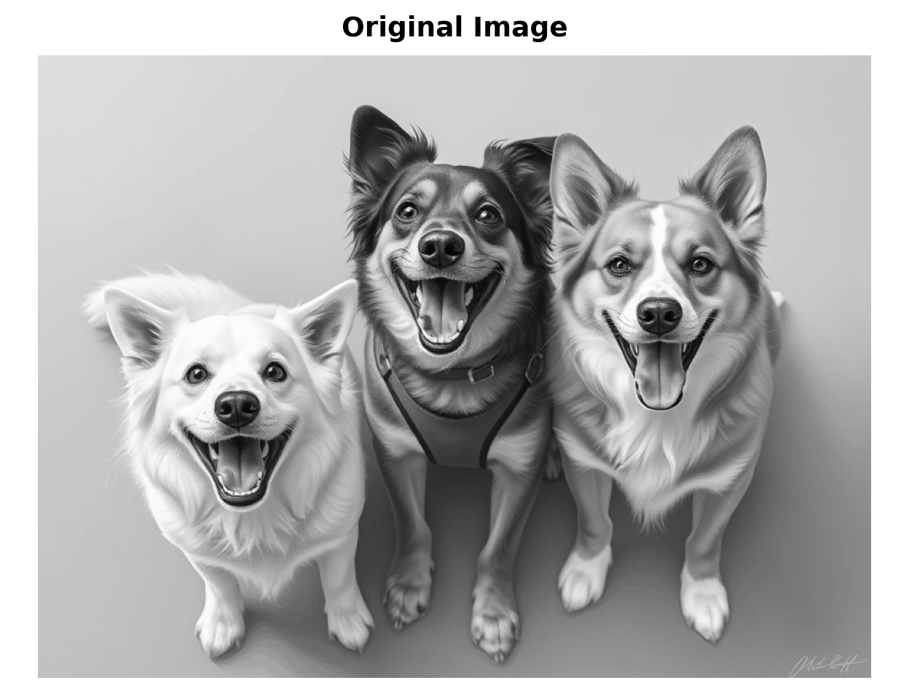

import numpy as np
from typing import Optional
from PIL import Image
import matplotlib.pyplot as plt
# Load the image
img_path = 'Dog_Main background.jpeg'
original_img = Image.open(img_path)
# Convert to grayscale if needed
if original_img.mode != 'L':
original_img = original_img.convert('L')
# Convert to numpy array and normalize to [0, 1]
img_array = np.array(original_img, dtype=np.float32) / 255.0
# Display the original image
fig, ax = plt.subplots(figsize=(6.5, 5))
ax.imshow(img_array, cmap='gray', vmin=0, vmax=1)
ax.axis('off')(np.float64(-0.5), np.float64(887.5), np.float64(663.5), np.float64(-0.5))ax.set_title('Original Image', fontsize=14, fontweight='bold', pad=10)
plt.tight_layout()
plt.show()
print(f"Image shape: {img_array.shape}")Image shape: (664, 888)print(f"Image size: {img_array.shape[0]}x{img_array.shape[1]} pixels")Image size: 664x888 pixels